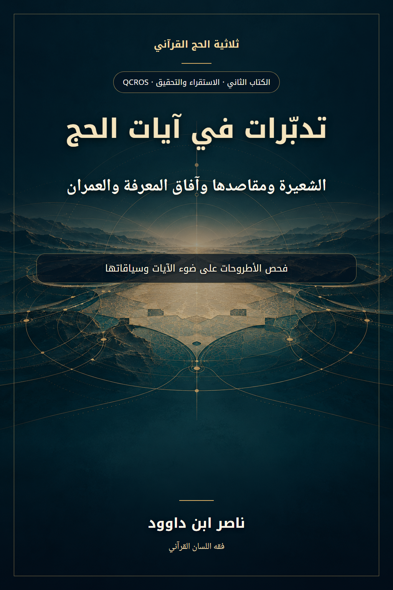

135. تدبّرات في آيات الحج — الشعيرة ومقاصدها وآفاق المعرفة والعمران

الكتاب الثاني من ثلاثية الحج القرآني؛ دراسة استقرائية وفق QCROS، تقابل الفرضيات بالآيات وسياقاتها وتبيّن حدود الاستنباط والنماذج البشرية.
النسخة الإنجليزية تكييف مفاهيمي مختصر؛ يبقى النص العربي المرجع الأساسي.
قراءة PDF داخل الموقع / Read the PDF on this website
جارٍ تجهيز القارئ… / Preparing the reader…